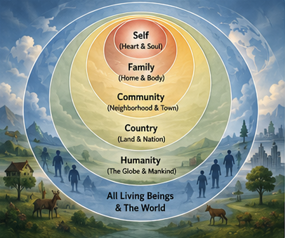
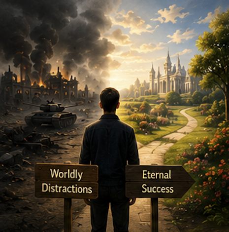
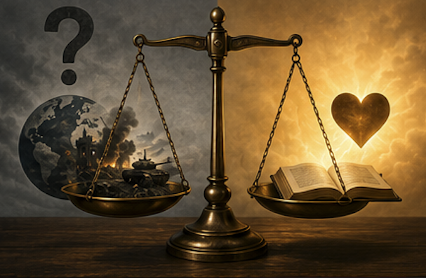

Life’s Capital#
Prioritizing Eternal Life Over Worldly Distractions
Reading Objectives
By the end of this text, students will be able to:
Explain why Bediüzzaman considered eternal life and faith more important than world events such as war.
Describe the analogy of concentric circles and how it represents different levels of human responsibility.
Identify the dangers of becoming overly preoccupied with politics, wars, and worldly affairs.
Analyze the concept of “life’s capital” and explain how people should use their limited time and energy wisely.
Interpret Bediüzzaman’s argument that faith is the “document” needed to attain eternal happiness.
Compare temporary worldly concerns with long-term spiritual priorities.
Apply the passage’s teachings to modern life, including the influence of news, technology, and social media.
Reflect on their own priorities and consider how to balance awareness of world events with personal and spiritual growth.
Background#
{kind=link}
This passage comes from the Fourth Topic of the Eleventh Ray, written during a period when the world was consumed by the events of World War II.
Some of Bediuzzaman’s students were surprised that he showed little interest in following the war, while many people, including religious scholars, eagerly listened to news broadcasts and discussed political developments.
Some of his students noticed that he never asked about the war, even though it was affecting many countries and seemed extremely important. They asked him two questions:
Is there some event more momentous (more important) than the war?
Is it harmful in some way to be preoccupied with it?
He explains that human life is limited and that people must carefully prioritize their time and energy. Although world events appear significant, they should not distract believers from their primary responsibility: strengthening their faith and preparing for eternal life.
He teaches that the struggle for eternal salvation is far more important than any political or military conflict.
Bediüzzaman encouraged his students to read this section often. In Kastamonu Letters, he wrote: “Read the Fourth Matter of The Fruits very often,” emphasizing its importance for strengthening faith and maintaining proper priorities in life.
The following passage presents his famous analogy of concentric circles, which illustrates how people should prioritize their duties and responsibilities.
Main Passage#
{kind=link}

Again, there is an explanation of this in A Guide For Youth.
One time, I was asked the following question by the brothers who assist me: “For fifty days now -and now seven years have passed (This refers to 1946) – you have asked nothing at all about this ghastly World War, which has plunged the whole world into chaos and is closely connected with the fate of the Islamic world, nor have you been curious about it.
Whereas some religious and learned persons are leaving the congregation in the mosques and racing to listen to the radio.
Is there some event more momentous than the war? Or is it harmful in some way to be preoccupiedwith it?”
I replied to them: Life’s capital is very little and the work to be done is much.
There are spheres one within the other like concentric circles, from the sphere of man’s heart and stomach, and that of his home and body, and that of the quarter in which he lives and his town, and his country and land, and the globe and mankind, to the spheres of animate beings and the world.
Each person may have duties in each of those spheres, but the most important and permanent of these are those in the smallest sphere.
While his least important and temporary duties may be in the largest sphere. According to this analogy, the largest and smallest are in inverse proportion.
But because of the attractiveness of the largest sphere, it causes the person to neglect his important, necessary duties in the small sphere, busying him with unnecessary, trivial, peripheral matters.
It destroys the capital of his life for nothing. It kills his precious life on worthless things. Sometimes, the one following curiously the struggles of the war comes to earnestly support one side. He looks favourably on their tyranny , and becomes a partner in it.
The Answer to the first point: Yes, an event more momentous than this World War and a case more important than that of world supremacy has been opened over the heads of everyone and especially Muslims, so that if everyone had the wealth and power of the Germans and English and sense as well, they would unhesitatingly spend all of it to win that single case.
The case is this: relying on the thousands of promises and pledges of the universe’s Owner, Who has disposal over it, hundreds thousands of the most eminent of mankind, and uncounted numbers of its stars and guides, have unanimously given news -and some of them have actually seen- that for everyone the case has opened by which they may either win, in return for belief, or lose, eternal properties as broad as the earth set with palaces and gardens.
If they do not secure the document of belief, they will lose. And this age, many are losing the case because of the plague of materialism.
Summary#
{kind=link}

Bediüzzaman explains that every person has limited time and many responsibilities. He compares human responsibilities to concentric circles, beginning with the individual and extending outward to humanity and the world.
He argues that people often become fascinated by large-scale events, such as wars and politics, and neglect their more important personal and spiritual responsibilities.
He then states that there is a far greater matter than world supremacy: the eternal destiny of every human being.
According to God’s promises, conveyed by prophets and righteous guides, every person has a choice between gaining eternal happiness through belief or losing it through disbelief.
He warns that materialism is causing many people to lose this “great case” by distracting them from faith and eternal concerns.
Next Part#
{kind=link}
After this passage, Bediüzzaman explains that the Risale-i Nur serves as a guide that strengthens faith and helps people succeed in this greatest case.
He emphasizes that despite opposition, imprisonment, and attempts to suppress it, the Risale-i Nur has continued to spread and positively influence thousands of people.
He also expresses hope that even prisons can become places of spiritual reform and education.
Answering the Two Questions#
{kind=link}

Q1: Is there some event more momentous than the war?
Yes. Nursi says that there is something far more important than even a world war: a person’s eternal life and the preservation of their faith (iman).
He explains that every human being is facing a much greater “case” than political struggles or world domination. The outcome of this case is eternal gain or eternal loss.
His argument is:“Even if someone possessed all the wealth and power in the world, it would be worth using all of it to secure success in this greater case.”
For Nursi, strengthening faith and preparing for eternal life is more important than following temporary world events.
Q2: Is it harmful to be preoccupied with the war?
Yes, it can be harmful if it distracts us from our important responsibilities.
Nursi gives several reasons:
It wastes the limited “capital” of life (our time, energy, and attention).
It distracts people from their real responsibilities, especially those closest to them.
It causes people to focus on trivial or peripheral matters while neglecting what is truly important.
It can lead to blind partisanship, where people become emotionally attached to one side and begin to excuse injustice or wrongdoing.
He is not saying people should ignore the world completely. Rather, he is warning against becoming so absorbed in world events that we neglect our personal, spiritual, and moral responsibilities.
Reading Comprehension Questions#

Why were Bediüzzaman’s students surprised by his behavior during World War II?
What does Bediüzzaman mean when he says, “Life’s capital is very little”?
What are the concentric circles used to represent?
Which duties does he consider the most important?
Why can paying too much attention to world events be harmful?
What danger can come from taking sides in wars?
What does Bediüzzaman describe as more important than world supremacy?
What is the “document of belief”?
According to the passage, what is causing many people to lose this great case?
What is the ultimate reward associated with belief?.
Critical Thinking Questions#

Why are people naturally drawn to large world events rather than their immediate responsibilities?
How can modern technology and social media create the same distractions that Bediüzzaman warned about?
What does “life’s capital” symbolize in your own life?
How can someone balance staying informed about current events while maintaining spiritual priorities?
Why do temporary events often seem more urgent than eternal concerns?
In what ways can materialism influence a person’s decisions and values?
Do you agree that personal responsibilities should come before global concerns? Why or why not?
How might focusing excessively on politics affect a person’s character?
What does this passage teach about the definition of success?
If you viewed your life as a limited investment, what would you choose to spend it on?
Glossary#

Word |
Definition |
|---|---|
Animate |
Living; having life. |
Capital |
A valuable resource; in this passage, it refers to the limited time, energy, and opportunities of a person’s life. |
Congregation |
A group of people gathered for religious worship, especially in a mosque, church, or synagogue. |
Disposal |
The power or authority to use, manage, or control something. |
Earnestly |
In a serious, sincere, and determined way. |
Eminent |
Highly respected, distinguished, or well-known because of achievements or character. |
Fate |
The future or final outcome of a person, group, or event. |
Ghastly |
Extremely shocking, horrible, or unpleasant. |
Inverse Proportion |
A relationship in which one quantity increases while the other decreases. |
Momentous |
Very important or significant, especially because it has lasting effects. |
Peripheral |
Secondary; not central or most important. |
Plunged |
Thrown suddenly or deeply into a difficult, serious, or chaotic situation. |
Preoccupied |
So absorbed in something that it distracts attention from other matters. |
Tyranny |
Cruel, unfair, or oppressive use of power over others. |
Unanimously |
With complete agreement by everyone involved. |
World Supremacy |
The highest level of power, dominance, or control over the world or other nations. |